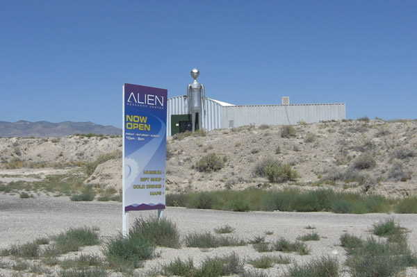
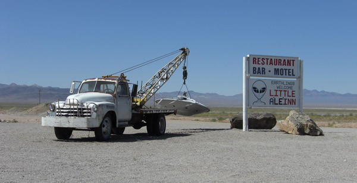

Area 51 or more precisely entry to it has always been one of the places I always wanted to visit. There are many stories about it online, some outdated, other obviously hoaxes and rumours. I decided to check it out myself. By that of course I mean check it out outside, without any attempts to enter.
Area 51 is a remote tract of land in the southwestern portion of southern Nevada in the western United States. Situated at its center, on the southern shore of Groom Lake, a dry lakebed (salt lake), is a large military airfield and one of the most secretive places in the world. The base's primary purpose is to support development and testing of experimental aircraft and weapons systems. src: http://en.wikipedia.org/wiki/Area_51.
Following is a short illustrated story that you can use as a guide to get to the gates of the forbidden zone.
Thus, September 1st, Labour Day, nothing to do. I was on my way from LA eastbound. Visiting Area 51 definitely sounded like good time on a day off.
There wasn't much preparation to do. Pretty much I was preparing mentally as I was approaching Las Vegas on Interstate 15. Stopped at a gas station and picked up Nevada detailed map, bought some water supplies, filled up my tank and made sure my camera battery is charged. On the laptop I had various websites opened in tabs of Firefox with different versions on how to reach mysterious Groom Lake entry.
There are a few entry points. I decided to go to northeastern near Rachel,NV.
Driving to the area takes about 2+ hours, the drive was not too interesting but neither was it too boring. I downloaded latest episodes of The Paracast and Eerie Radio to keep me entertained as well as to keep the theme of the adventure.
Driving on 93 was the majority of the way.
Next turn off is into SR-375, also (officially) known as Extraterrestrial Highway, you briefly go on SR-318 before hitting SR-375.

The road has occasional entertaining and funny banners.
So next turn it was SR-318.
Then left onto SR-375 (Extraterrestrial Hwy).
Following signs to Rachel.
Despite worrying that the trip was going to take too long, the final destination was approaching quite fast. Here was, 40 miles to go to Rachel,NV, which means turn off into dirt road for Area 51 was about 20 miles away.
More alien ads along the way.
And more intimidating signs telling drivers that they're descending farther away from civilization :) but on a serious note, it's important to make sure your tank is full, because who knows what awaits ahead?

Next on the way is some strange "Alien Research Center". Too bad it's closed on Mondays.
Suddenly it occurred to me that it's probably a good idea to pull over and post something on my twitter.com/f1vlad for a number of reasons. What if I get arrested or disappear? What if something else happens, at least needed to leave some kind of clue where i was headed. Unfortunately, I found no signal in the area. Later I realised there was no signal anywhere once I turned off from I-15.
But I had one last hope! I pulled out my Sierra Spring/Nextel mobile broadband card and plugged it to USB but to no avail as you can see on the screen. Although it says connected, there was no signal. Maybe there was a weak (roaming) signal for voice but no data.
Red light indicates there is no signal. So there was no chance to leave any sort of message about where I was headed. I also wanted to upload all my pictures to the internet in case my camera got confiscated.
I continued driving and reached mountain peak Hancock Summit. At this point it was time to turn off podcasts and concentrate on what I was doing.
As I was descending from Hancock Summit I had to watch mile markers. Because my important landmark was between mile 30 and 29.
And there it was mile marker 30. Time to look for "black mailbox".
Black mailbox used to be black. Now it's white. Black one was auctioned some time ago and was replaced with this. Which also has a donation box so the guy named Steve Medlin can afford to repaint it every once in a while.
In this video you can observe black mailbox on the right-hand side as it's passed while driving on SR-375.
At this mailbox I was making a left turn into a dirt road.
Driving about 4 miles on a pretty straight road. I am facing intersection. The road goes straight, to the left and to the right. Stay straight!
Driving 1 mile before our road goes to the left and faces another road crossing it. Turning right on that road. It is called Groom Lake Rd.
Keep on driving on Groom Lake Rd. It is approximately 8 1/2 miles to the entry to the base. Important: there is no gate, you can easily cross to forbidden territory if you don't pay attention.
A couple of cars were speeding towards me, looked like one chasing another, I slowed down. That's the excitement of doing something first time. Because you never know if that is a regular car or it's a security/guard car headed towards you. And I was definitely having adrenaline rush at that point. Not because of the car coming towards me but about the whole situation.
A couple of cars ended up being tourists just like me, waved at me passing by. As you see it's pretty difficult to see because of dust.
Closer and closer to no-mans land.
What a surprise -- someone is camping 2 miles to the entry to Area 51!

Maybe next time I will do exactly the same. However it was pretty strange. Tent was setup suspiciously close to the Groom Lake Rd. Wouldn't one be concerned to be run over while asleep? I wonder if this tent served some other purpose.
And here you go; this is as close as I could risk to photograph the area. The picture you're looking at was taken with a great care and barely sticking my camera out of the dashboard. And even that was risky because I was convinced they were ready for me looking at me through binoculars.
The road went a bit to the right and up the hill and I saw the signs reading "NO ENTRY BEYOND THIS POINT, blabla, DEADLY FORCE AUTHORIZED". And on a hill to my right there was that pickup truck. I couldn't see if there were people inside or not but it was pretty intimidating. I came to a full stop and stood there for about 10 seconds reading the signs pretending to be lost, while nervously glancing at the white pickup truck. Then I turned around and slowly drove off. I looked in the mirrors and did not notice anything going on behind me. White truck stood still and I was almost relaxed. I drove for maybe 2 miles passing that tent again.
One more mile heading away and I felt pretty relaxed and happy that nothing bad happened! I decided to pull over and take some pics of my car. It was very dusty, I could see that paint wasn't even shiny anymore covered in a dust. So as I opened the door about to get out but by accident I noticed a car behind me. Maybe half mile or so away. I instantly shut the door and sat there for a second thinking.
From the entry to Area 51 to the point where I was there were no side roads. So this car came either from forbidden area or offroaded from the fields.
This is exactly what I saw in a rear view mirror. The car just stood there. Obviously it stopped as soon as I did.
I put the car back in gear and carried on driving very slowly. The car behind started following me as I was taking the pictures and making short videos.
Another shot of the car as I started moving.
The vehicle behind followed me for about 5 miles and then I couldn't see it anymore. Approaching black mailbox again I saw some other car coming towards me, it was red SUV type of car, but it kept on going towards Groom Lake Rd. and did not bother me.
Back to mailbox finally relaxed.
Notice how dusty the car is after the trip to the Groom Lake Rd.

Driver responsible for the trip.
Maybe I relaxed too soon? Someone was coming and fast. I quickly but calmly walked towards my car and sat inside. Who knows maybe I had to run away or something? That turned out to be a couple in the red SUV kind of car that just drove passed me few minutes ago. They were lost but were looking for Area 51 just like me. I gave them directions, they turned around and went back towards the area.

Extraterrestrial Highway.

Rachel,NV.

Little A'LE'INN.
I am happy that my trip ended well. Maybe some time in the future when I am better prepared I can hike up the mountain to some remote place where you can actually see Groome Lake base.
This obviously did not appear to be regular Air Force base. I had been to a number of Air Force bases as well as lived next to one at one point. Obviously they do something there that general public shouldn't know for one or another reason. And I understand and respect that. What's interesting is that The U.S. government does not acknowledge the existence of the Groom Lake facility, nor does it deny it.
Archived comments
ok, u got my attention
— Guy from Romaniaok,
If area51 got such so many tech stuff, why they don't break youtube and delete this vids?
Because every movie u shot, it's not important to them. So, u could stop, talking to them but i don't think they could force u to confiscate all ur work stuff.
Why they are hiding all this things? Why is this a big secret. Look around u, so many disasters, so many bad things, makes me think that revealing the true face of Area 51 will make a better place of this planet.
Or a 3rd World War,of course... :laugh:
Found very interesting video
— f1vladFound very interesting video on youtube that actually shows people going past the gate:
nice
— RAKIASo you really think you were being followed? thats nuts man. If you had someone with you, some weapons, and maybe some really big balls you should have turned around to talk to them to find out what was going on :)
still, kinda nuts!
nice pics too!
Hey Rakia, you know I am
— f1vladHey Rakia, you know I am quite convinced that I was. When I stopped, that car stopped too maybe with 5 seconds delay. That seems to be typical behavior if you're following somebody.
In fact, if I didn't have my work equipment with me in my car, I would do precisely that, stop and try to talk to them. But I couldn't risk having my work stuff confiscated.
What will not leave my mind is that tent setup 2 miles from entry to the forbidden zone. I just think about it now and it's suspeciously close to the road and all the coolers, bottles of water and stuff look as though they were setup to give an impression of someone camping. I don't know what purpose it would serve. But I just can't stop thinking about it.
Why don't you show this link to your step-dad and ask him if he knows what's going on?